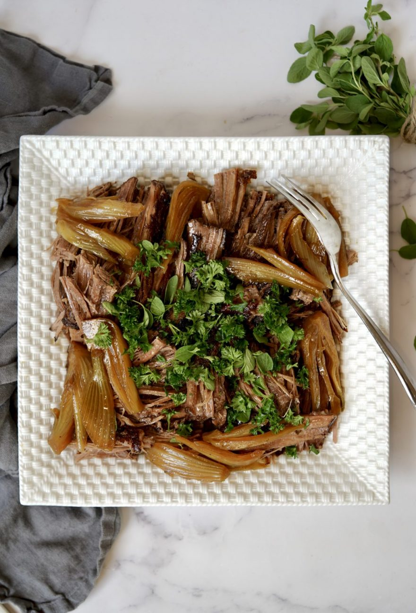

Brisket with Fennel and Leeks

Description
This seems like a lot of steps!
Ingredients
- 1 4–5-lb. piece untrimmed flat-cut beef brisket
- Kosher salt
- Freshly ground black pepper
- 4 Tbsp. vegetable oil, divided
- 1 large fennel bulb, cut through root end into 1"-thick wedges
- 3 celery stalks, cut into 2" pieces, plus 1 cup leaves
- 1 head of garlic, halved crosswise
- ½ bunch thyme, oregano, or marjoram
- ¾ cup distilled white vinegar
- ¼ cup low-sodium soy sauce or Worcestershire sauce
- 2 cups mixed tender herbs (such as parsley, mint, and/or cilantro)
- ½ lemon
- Crushed red pepper flakes (optional)
- Flaky sea salt
Instructions
- Preheat oven to 300°. Season brisket on all sides with kosher salt (about 1 tsp. Diamond Crystal or ½ tsp. Morton per lb.) and pepper and set on a rimmed baking sheet. Chill, uncovered, at least 12 hours and up to 2 days.
- Heat 2 Tbsp. oil in a large heavy pot over medium. Cook brisket, fatty side down, until deeply browned (it might be snug at first, but the meat will shrink as it cooks), 10–12 minutes. Turn and cook until the other side is deeply browned, 8–10 minutes. Turn onto edges and brown (this isn’t necessary, but it will add more flavor). Transfer to a platter.
- Pour off fat in pot; discard. Pour remaining 2 Tbsp. oil into pot; set over medium-high heat. Add onion and season with kosher salt and pepper. Cook, stirring occasionally, until softened and beginning to brown and frizzle around the edges, about 3 minutes.
- Add fennel, celery, garlic, and thyme and toss to coat; season with kosher salt and pepper. Add vinegar, soy sauce, and 4 cups water. Place brisket in pot, arranging fatty side up; it should be submerged. (Use tongs to work it in there. If anything has to poke out of the liquid, let it be the vegetables.) Bring to a simmer, then cover and slide into the oven. Braise (without peeking) 3 hours. Check brisket; it should be very tender (the tip of a knife should easily pierce meat). If not, braise another 20 minutes or so and check again.
- Uncover brisket and increase oven temperature to 425°. Roast until liquid is reduced by three-fourths and top of brisket is crisp and deeply browned (it should be extremely tender), 50–60 minutes. Let cool slightly, then transfer to a cutting board. Slice with a serrated knife or shred with your hands. Skim fat from surface of braising liquid.
- Just before meat is done, place tender herbs and celery leaves in a small bowl; squeeze some juice from lemon over and toss to coat.
- Arrange meat on a platter. Spoon vegetables and braising liquid in pot around meat and top with herb salad. Sprinkle with red pepper flakes, if desired, and sea salt.